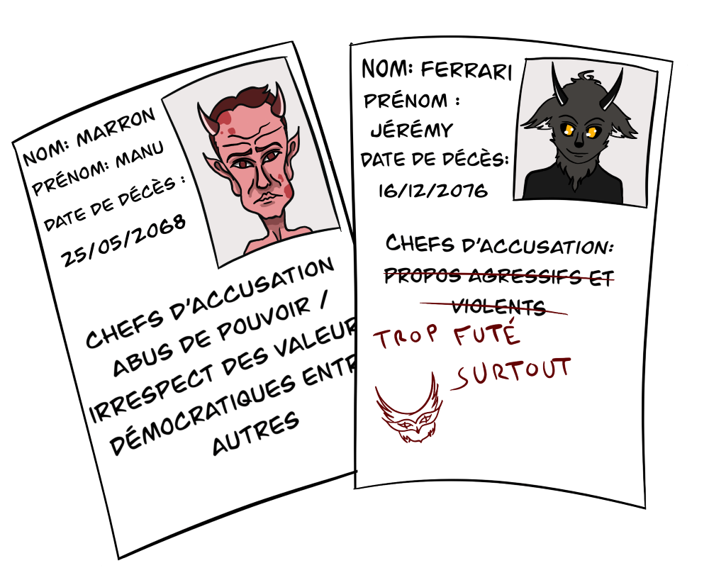
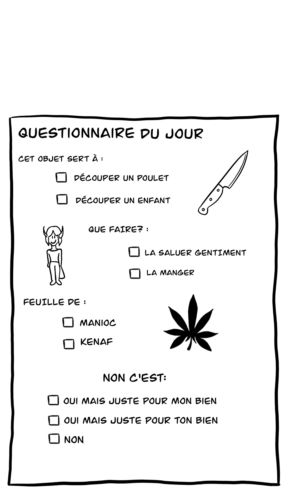

Accueillir des nouveaux arrivants ayant besoin d'une rééducation ou des prisonniers infernaux fraichements libérés
Permettre aux élèves de réintégrer la société
Inculquer des valeurs éthiques
Préparer à la vie en société
Aider les élèves à améliorer leur santé physique et morale


Concrètement:
Vivre sur le campus avec les élèves
Avoir à sa charge au long d'un cursus de quatre ans plusieurs heures par jour une classe d'une dizaine d'élèves
Travailler en coopération avec les autres professeurs et le service de psychologie pour permettre à terme d'améliorer le bien être et le comportement des élèves
Utiliser les méthodes d'enseignement de votre choix en passant à la fois par des cours théoriques comme l'exemple ci contre et pratiques tant qu'elles n'enfreignent pas les codes de protection des étudiants
Animer des ateliers sportifs et culturels sur le campus pour permettre l'épanouissement des étudiants